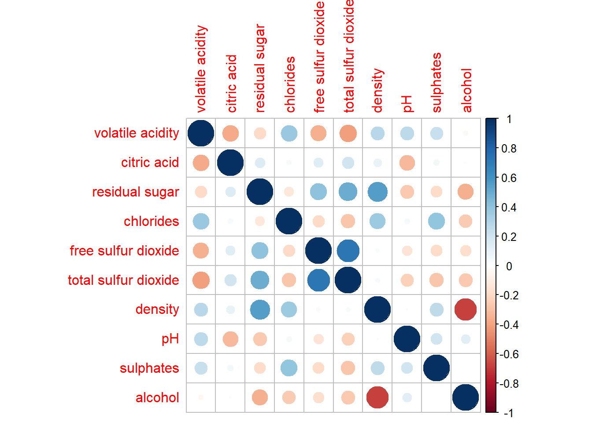

pacman::p_load(tidyverse, ggstatsplot, corrplot)Hands-on Exercise 05 - Visual Correlation Analysis
1. Overview
Correlation coefficient is a statistic used to measure the type and strength of the relationship between two variables. The values of a correlation coefficient ranges from -1.0 to 1.0 - a correlation coefficient of 1 shows a perfect positive correlation, a correlation coefficient of -1 shows a perfect negative correlation, and a correlation coefficient of 0 shows no linear relationship.
When multivariate data is used, we can display pair-wise comparisons of the correlation coefficient as a correlation matrix or a scatterplot matrix. This helps to reveal the relationship between high-dimensional variables, to be included into other analyses, and to use as a diagnostic tool such as testing for multi-collinearity.
In this exercise, we will visualise correlation matrix use pairs() and the corrplot package.
2. Getting Started
2.1. Installing and Loading Packages
We will use the following R packages in addition to tidyverse for this exercise:
ggststplot:ggplot2extension designed for creating graphics with details from statistical tstscorrplot: to create correlation matrix
The packages to be used can be installed and loaded into the R environment using the p_load() function from the pacman package:
2.2. Import Data
Next, we will read the data provided by the Course Instructor into the R environment. We will use the read_csv() function from the readr package found in tidyverse.
wine <- read_csv('data/wine_quality.csv')
glimpse(wine)Rows: 6,497
Columns: 13
$ `fixed acidity` <dbl> 7.4, 7.8, 7.8, 11.2, 7.4, 7.4, 7.9, 7.3, 7.8, 7…
$ `volatile acidity` <dbl> 0.700, 0.880, 0.760, 0.280, 0.700, 0.660, 0.600…
$ `citric acid` <dbl> 0.00, 0.00, 0.04, 0.56, 0.00, 0.00, 0.06, 0.00,…
$ `residual sugar` <dbl> 1.9, 2.6, 2.3, 1.9, 1.9, 1.8, 1.6, 1.2, 2.0, 6.…
$ chlorides <dbl> 0.076, 0.098, 0.092, 0.075, 0.076, 0.075, 0.069…
$ `free sulfur dioxide` <dbl> 11, 25, 15, 17, 11, 13, 15, 15, 9, 17, 15, 17, …
$ `total sulfur dioxide` <dbl> 34, 67, 54, 60, 34, 40, 59, 21, 18, 102, 65, 10…
$ density <dbl> 0.9978, 0.9968, 0.9970, 0.9980, 0.9978, 0.9978,…
$ pH <dbl> 3.51, 3.20, 3.26, 3.16, 3.51, 3.51, 3.30, 3.39,…
$ sulphates <dbl> 0.56, 0.68, 0.65, 0.58, 0.56, 0.56, 0.46, 0.47,…
$ alcohol <dbl> 9.4, 9.8, 9.8, 9.8, 9.4, 9.4, 9.4, 10.0, 9.5, 1…
$ quality <dbl> 5, 5, 5, 6, 5, 5, 5, 7, 7, 5, 5, 5, 5, 5, 5, 5,…
$ type <chr> "red", "red", "red", "red", "red", "red", "red"…Using glimpse to view the data, it is observed that the data contains 13 variables and 6497 observations of wine attributes and quality of red and white wine.
3. pairs() Method
We will use the pairs() function to create a scatterplot matrix.
3.1. Basic Correlation Matrix
pairs(wine[,2:11])3.2. Customisation
3.2.1. Drawing One Corner
The pairs() function provides customisation arguments to show either the upper ror lower half of the correlation matrix.
pairs(wine[,2:12], upper.panel = NULL)
pairs(wine[,2:12], lower.panel = NULL)
3.2.2. Including Correlation Coefficient
We can use the `panel.cor function to include the correlation coefficient into the correlation matrix.
panel.cor <- function(x, y, digits=2, prefix="", cex.cor, ...) {
usr <- par("usr")
on.exit(par(usr))
par(usr = c(0, 1, 0, 1))
r <- abs(cor(x, y, use="complete.obs"))
txt <- format(c(r, 0.123456789), digits=digits)[1]
txt <- paste(prefix, txt, sep="")
if(missing(cex.cor)) cex.cor <- 0.8/strwidth(txt)
text(0.5, 0.5, txt, cex = cex.cor * (1 + r) / 2)
}
pairs(wine[,2:12],
upper.panel = panel.cor)
4. ggcormat() Method
Corrgram visaulisation technique is designed to overcome the problem of cluttered correlation matrix when the number of observations is large. The ggstatsplot package provides functions to build corrgrams.
4.1. Basic Corrgram
We will use the ggcormat() function to create a scatterplot matrix.
ggcorrmat(data = wine,
cor.vars = 1:11,
ggcorrplot.args = list(outline.color = "black",
hc.order = TRUE,
tl.cex = 10),
title = "Correlogram for wine dataset",
subtitle = "Four pairs are no significant at p < 0.05")
5. Building Multiple Plots
We can use the grouped_ggcormat() function to build facet plots.
grouped_ggcorrmat(
data = wine,
cor.vars = 1:11,
grouping.var = type,
type = "robust",
p.adjust.method = "holm",
plotgrid.args = list(ncol = 2),
ggcorrplot.args = list(outline.color = "black",
hc.order = TRUE,
tl.cex = 10),
annotation.args = list(
tag_levels = "a",
title = "Correlogram for Wine",
caption = "Dataset: UCI Machine Learning Repository"))6. corrplot() Method
Before we plot a corrgram using corrplot(), we first compute the correlation matrix of the wine dataset.
wine.cor <- cor(wine[,2:11])
corrplot(wine.cor)
The default visual object used to plot the corrgram is circle, the default layout is a symmetric matrix, and the default colour scheme is diverging blue-red. Blue represents positive correlation and red represents negative correlation The intensity of the colour represents the strength of the linear correlation - darker colours represent a stronger linear relationship.
6.1.Visual Geometrics
In the corrplot() package, there are seven visual geometrics to encode the attribute values: circle, square, ellipse, number, shade, color, and pie, We can change the geometrics using the following code:
corrplot(wine.cor,
method = 'number')6.2. Layout
The corrplot() package supports three layout types: full, upper, or lower.
corrplot(wine.cor,
method = "ellipse",
type = "upper",
diag = FALSE,
tl.col = "black")6.3. Mixed Layout
The corrplot() function allows for customisations to mix the visual matrix with half visual matrix and half numerical matrix. We can use the corrplot.mixed() function to achieve this.
corrplot.mixed(wine.cor,
lower = "ellipse",
upper = "number",
tl.pos = "lt",
diag = "l",
tl.col = "black")6.4. Significant Test
We can use the cor.mtest() function to compute the p-values and confidence interval for each pair of variables.
wine.sig = cor.mtest(wine.cor, conf.level = 0.95)
corrplot(wine.cor,
method = "number",
type = "lower",
diag = FALSE,
tl.col = "black",
tl.srt = 45,
p.mat = wine.sig$p,
sig.level = 0.05)6.5. Reorder a Corrgram
corrplot() supports four sorting methods:
- “AOE” for the angular order of the eigenvectors
- “FPC” for the first principal component order
- “hclust” for hierarchical clustering order and “hclust.method” for the agglomeration method where a definiion must be provided: “ward”, “single”, “complete”, “average”, “mcquitty”, “median”, or “centroid”
- “alphabet” for alphabetical order
corrplot.mixed(wine.cor,
lower = "ellipse",
upper = "number",
tl.pos = "lt",
diag = "l",
order="AOE",
tl.col = "black")We can use the hclust() method to reorder the correlation matrix:
corrplot(wine.cor,
method = "ellipse",
tl.pos = "lt",
tl.col = "black",
order="hclust",
hclust.method = "ward.D",
addrect = 3)